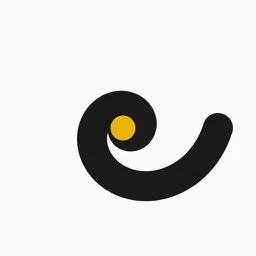
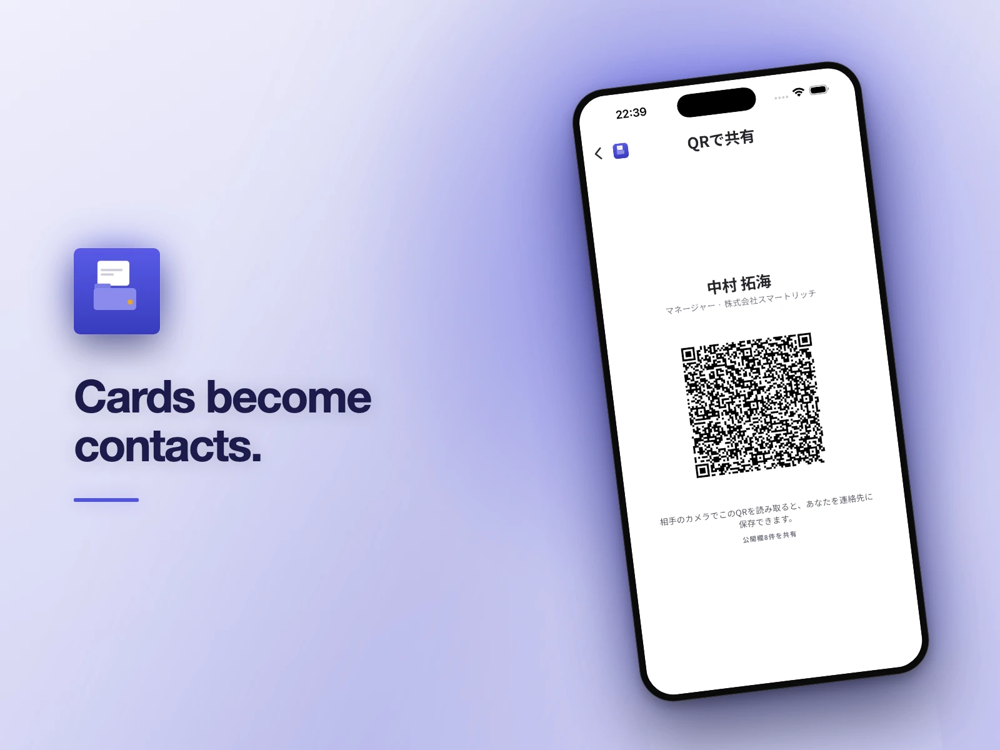
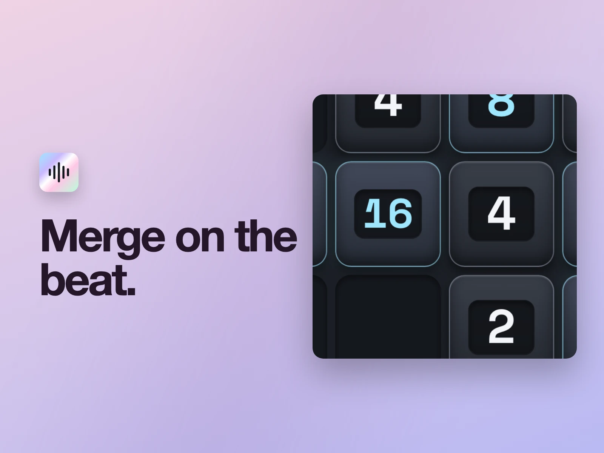
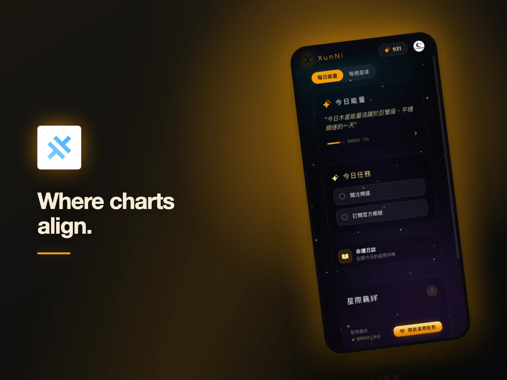
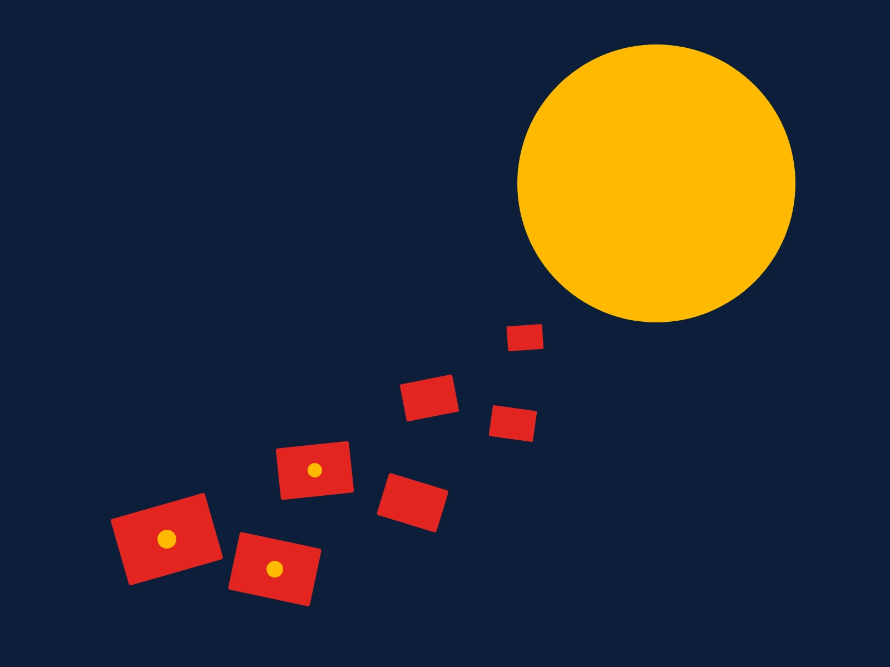
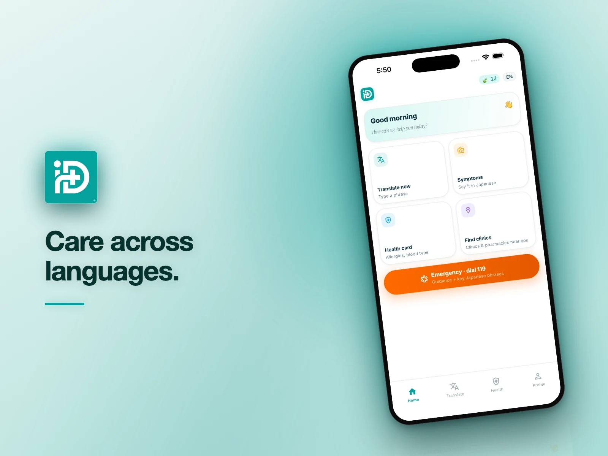
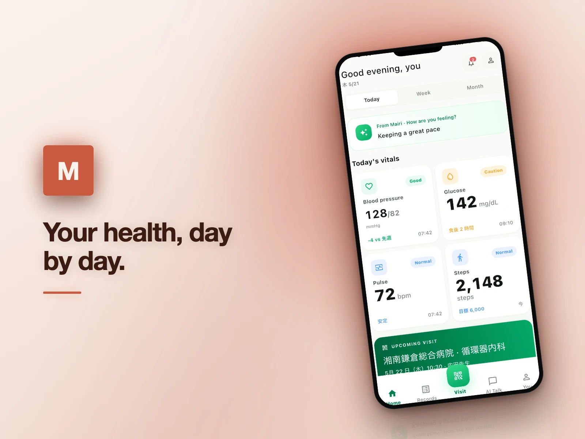
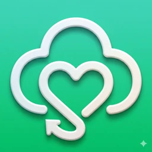
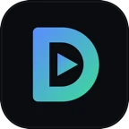

PurityLens
成分をひと目で化粧品のラベルを撮影し、成分と判定根拠を確認できます。
iOS
詳しく読む →成分表は規制のために書かれていて、消費者のためには書かれていません。ネットで調べれば同じ成分に五通りの説明が出てきます。PurityLensはラベルを読み取り、それがあなたの肌にとってどうなのかを示します。他がやっていないのは根拠の開示です。判定のうちTFDA・CosIng・CIR・PubChemが何割で、AIが何割か。自信がないときは、自信がないことがそのまま見えます。

東京の独立系プロダクトスタジオ
Creative × Realize — アイデアを、実際に使われるプロダクトへ。
Creative × Realize. 着想を、実際に役立つプロダクトへ。 調査、設計、開発、リリース。その後も改善を続けます。














アイデアからリリースまで、明確な手順で進めます。
これまでにつくったものを、
見せてください。
東京を拠点にする少人数のリモートチームです。わかりやすいコミュニケーション、丁寧なものづくり、実際に使われる成果を大切にしています。ご応募の際は、自信のあるプロジェクトをひとつ選び、担当したことを添えてお送りください。